A Voz do Silêncio
Um dos animes que mais gosto. É daqueles que ficam na cabeça depois que termina.
Eu ainda estou aprendendo, mas já descobri uma coisa: gosto de transformar ideias em alguma coisa que possa ser vista, usada e lembrada.
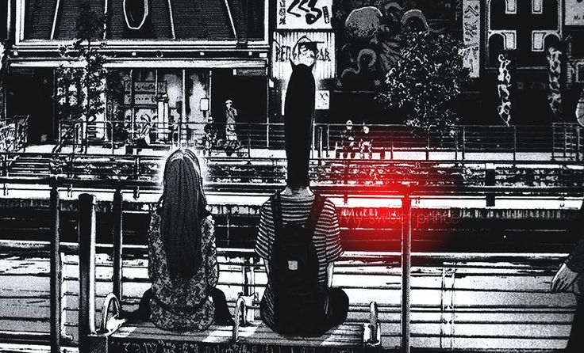
Meu nome é Luiz Eduardo. Estou estudando programação e construindo meu caminho aos poucos. Atualmente estudo no SENAI e venho aprendendo principalmente colocando a mão no código.
Já fiz vários exercícios e projetos durante meus estudos. Alguns ficaram bons, outros serviram mais para descobrir onde eu tinha errado KKKKK.
Gosto de ver uma ideia saindo da cabeça e virando alguma coisa que realmente funciona na tela.
Minha evolução aconteceu muito mais fazendo projeto, errando e tentando de novo do que só ficando olhando teoria.
Comecei pelos fundamentos e fui entendendo aos poucos como uma página realmente funciona.
No SENAI comecei a colocar mais coisa em prática, fazendo exercícios, atividades e projetos.
Depois fui juntando o que aprendi e criando projetos próprios para testar ideias e aprender coisas novas.
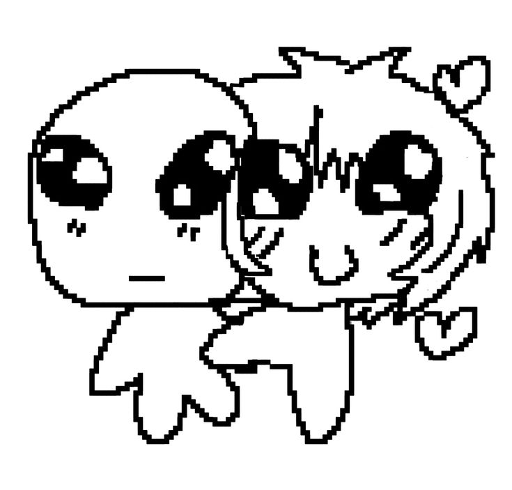
SIM, A GENTE ESTÁ NAMORANDO. ♡
Ela é a única guria com quem eu sinto que posso falar de tudo e realmente ser ouvido. É especial encontrar alguém que gosta de tantas coisas parecidas comigo, que entende minhas referências e compartilha meus gostos.
Julya, me desculpa quando eu não sei demonstrar carinho do jeito que você merece. Às vezes eu travo para colocar sentimentos em palavras ou gestos, mas isso nunca significa que você é menos importante para mim. Eu te amo demais, de verdade. Obrigado por me escutar, por estar comigo e por gostar desse nosso mundinho de coisas estranhas.
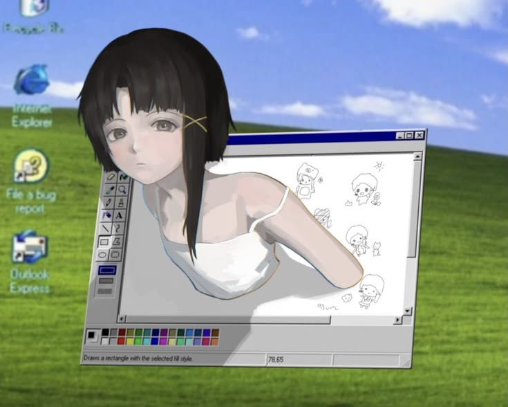
Uma criatura oficialmente reconhecida como nosso filho.
Não trabalha, não paga conta, provavelmente não sabe o que é HTML e ainda assim conseguiu ganhar um espaço nesse portfólio.
filho meu e da JulyaNem tudo aqui é sobre programação. Também tem as coisas que eu curto quando não estou mexendo em código.
Um dos animes que mais gosto. É daqueles que ficam na cabeça depois que termina.
Estranho, psicológico e com aquela estética de internet que eu curto.
Um dos mangás que mais marcou meu gosto.
Sites, imagens, músicas e aquela estética meio melancólica que combina comigo.
Quando tenho uma ideia, gosto de tentar transformar ela em alguma coisa de verdade.
Algumas coisas que já usei ou estou aprendendo durante meus estudos.
Esse projeto também tem um lado pessoal. Nem sempre foi fácil entender o que eu sentia, mas aprendi que não precisava guardar tudo sozinho. Conversar com meus amigos foi uma parte importante desse processo — poder falar, ser ouvido e perceber que eu não estava sozinho fez diferença.
O Gabriel, o Felipe e o João fizeram parte dessa caminhada. Sou especialmente grato ao João, porque o apoio dele significou muito para mim. Com o tempo, também tentei estar presente para meus amigos nos momentos difíceis, ouvindo sem julgar e oferecendo companhia quando precisavam. Isso me mostrou que, às vezes, uma conversa sincera pode ser um começo importante.
Foi uma das razões para criar o Mente em Flor: compartilhar acolhimento, falar sobre saúde mental sem fingir que tudo é simples e lembrar que pedir ajuda não é fraqueza. Cada pessoa vive as coisas de um jeito; conversar com alguém de confiança pode ajudar, e buscar apoio profissional também é válido quando necessário.
Conheça o Mente em Flor UM PROJETO DE CONSCIENTIZAÇÃO · FEITO COM HTML, CSS E JSAprendi a importância de conversar e aceitar apoio.
Gabriel, Felipe e João fizeram parte da minha caminhada.
Tento estar presente para meus amigos quando eles passam por momentos difíceis.
Ainda não cheguei onde quero, mas já estou muito longe de onde comecei.
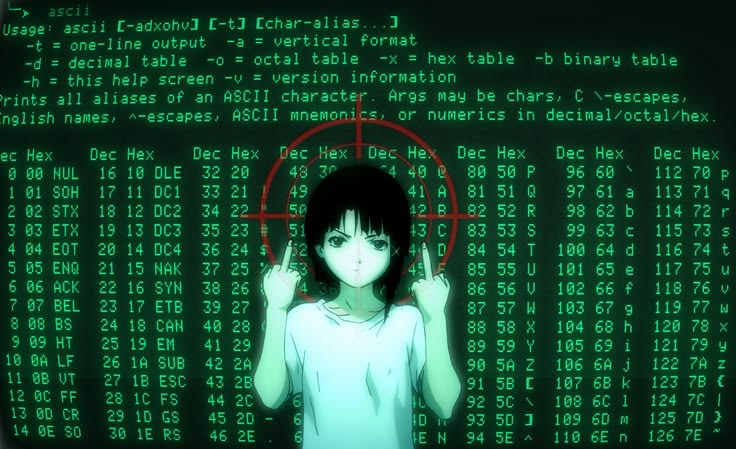
Projeto desenvolvido durante os estudos.
Abrir projeto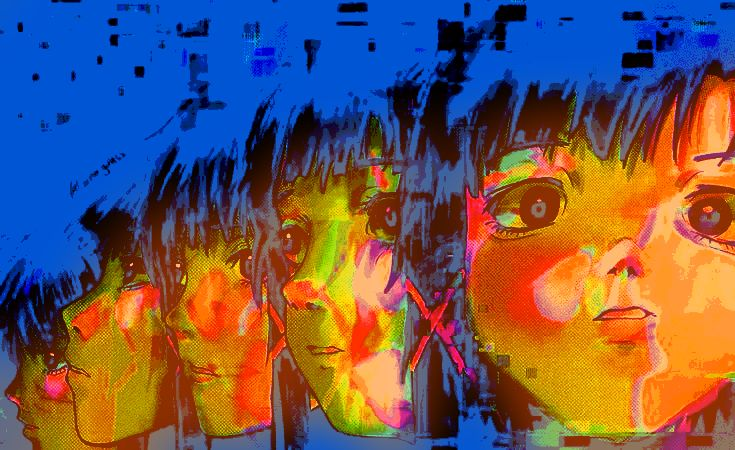
Projeto de criação de álbum.
Abrir projeto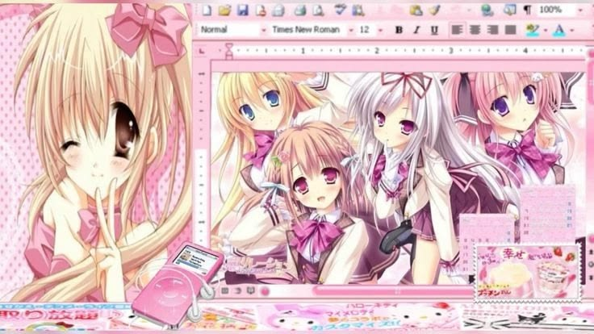
Exercício envolvendo botões e estilos.
Abrir projeto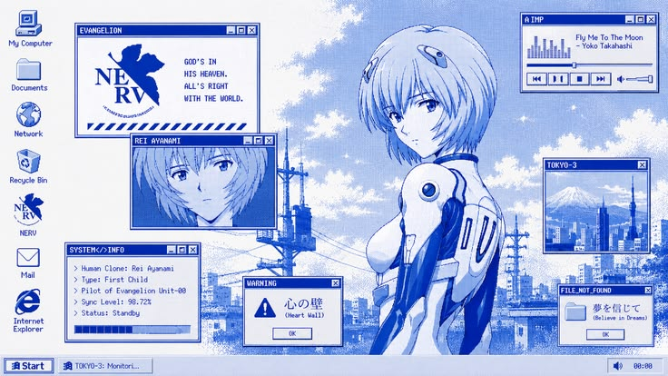
Página de currículo.
Abrir projeto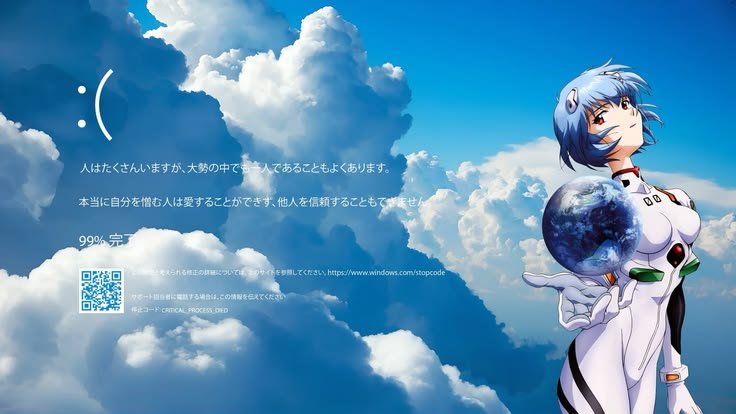
Projeto de página de diário.
Abrir projetoPágina para divulgação de evento.
Abrir projetoExercícios com imagens e fundos.
Abrir projeto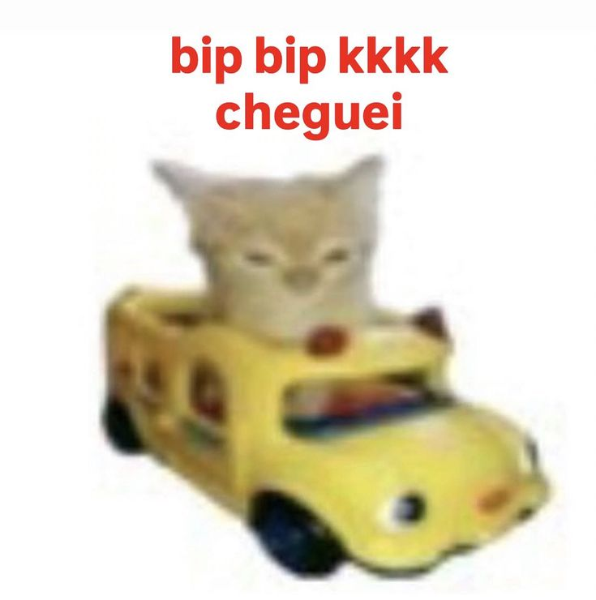
Exercício de espaçamento com CSS.
Abrir projeto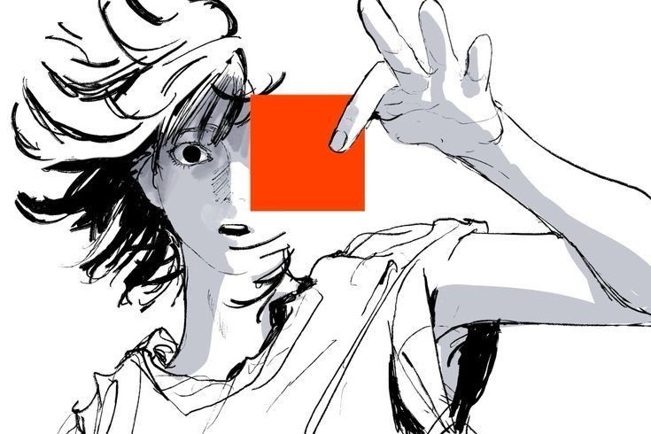
Projeto de site pessoal.
Abrir projetoPágina sobre passatempos.
Abrir projeto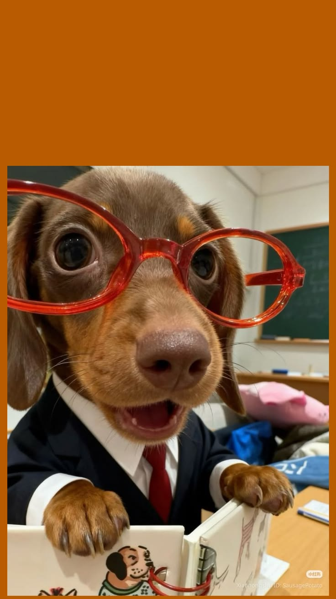
Página de perfil.
Abrir projetoProjeto de organização.
Abrir projetoPágina de receita.
Abrir projeto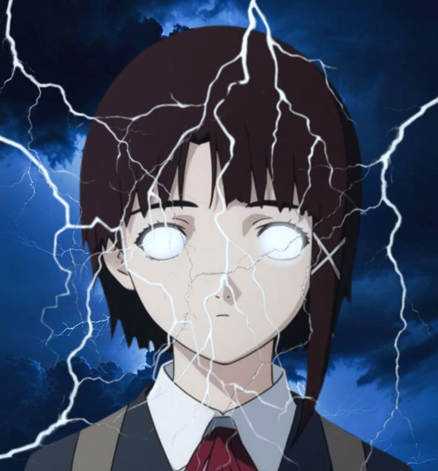
Exercício com seletores CSS.
Abrir projetoProjeto envolvendo lógica.
Abrir projeto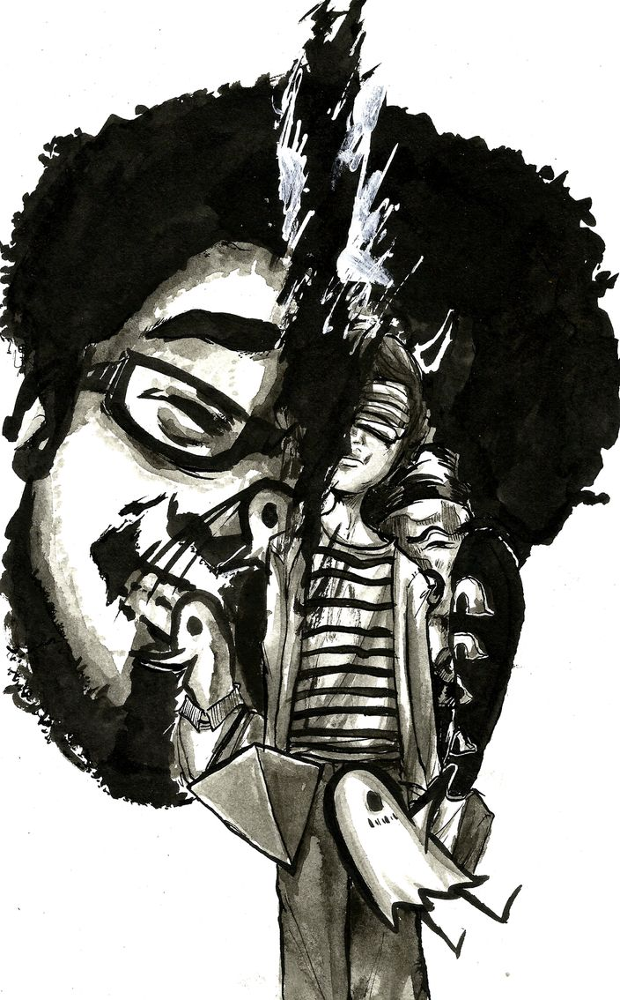
Página com conteúdo em vídeo.
Abrir projeto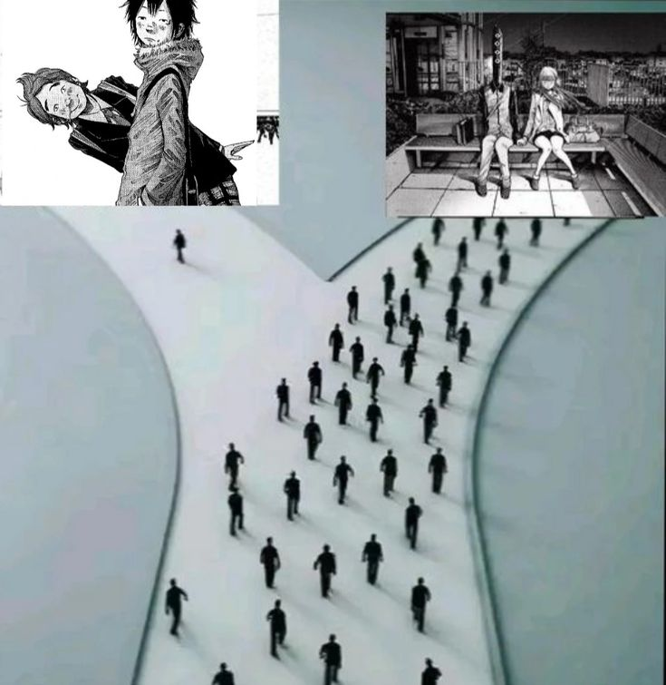
Projeto de página de visita.
Abrir projetoProjeto desenvolvido para avaliação.
Abrir projetoRevisão dos conteúdos estudados.
Abrir projetoTem dias que a internet parece um lugar estranho.
Eu gosto de deixar um pouco disso nos meus sites.Algumas histórias me acompanham. Outras ainda estão esperando a vez de sair da lista de desejos.
Sobre culpa, escuta, crescimento e reconexão.
Uma história emocionalmente intensa sobre crescer.
Identidade, redes e a sensação de estranheza.
Uma história curta sobre luto e amizade.
Juventude, inquietação e escolhas difíceis.
Uma leitura que quero conhecer melhor.
A história em sua versão original impressa.
Sempre existe alguma página esperando.
* Esta é uma lista pessoal de gostos e leituras, não uma biblioteca de páginas reproduzidas.
Uma seleção de mangás e quadrinhos com temas psicológicos, emocionais ou uma estética que combina com meu gosto. Alguns eu já conheço; outros estão na minha lista para descobrir. Não são todos recomendações de leitura leve.
Memórias, identidade e intimidade em quadrinhos.
ESTANTE / XQRENS ↗Juventude, sonhos interrompidos e mudanças.
ESTANTE / XQRENS ↗Um mergulho perturbador na percepção de si.
ESTANTE / XQRENS ↗Uma história delicada e introspectiva.
ESTANTE / XQRENS ↗Retrato desconfortável da adolescência.
ESTANTE / XQRENS ↗Vivências pessoais sobre diferenças e cotidiano.
ESTANTE / XQRENS ↗Arte, amizade e o tempo que passa.
ESTANTE / XQRENS ↗Memória, cinema e a linha entre fato e ficção.
ESTANTE / XQRENS ↗Relato autobiográfico sobre solidão e identidade.
ESTANTE / XQRENS ↗Histórias interligadas sobre pessoas e solidão.
ESTANTE / XQRENS ↗Drama psicológico sombrio e não linear.
ESTANTE / XQRENS ↗Cidade, infância e contrastes emocionais.
ESTANTE / XQRENS ↗Arte, estudo e o desejo de se descobrir.
ESTANTE / XQRENS ↗Fábula sombria com atmosfera delicada.
ESTANTE / XQRENS ↗Thriller psicológico cheio de escolhas difíceis.
ESTANTE / XQRENS ↗Pressões da aparência e da fama.
ESTANTE / XQRENS ↗Drama íntimo sobre perda e relações.
ESTANTE / XQRENS ↗Luto e uma amizade que continua na memória.
ESTANTE / XQRENS ↗Inquietações, vergonha e juventude.
ESTANTE / XQRENS ↗Crescer nem sempre é simples.
ESTANTE / XQRENS ↗Detalhes pequenos e meio aleatórios também fazem parte da minha história.
Gosto de sites que parecem ter personalidade, não só botões.
UM TEMAHistórias psicológicas sempre chamam minha atenção.
UM GOSTOQuero fazer projetos que as pessoas realmente usem.
UMA IDEIAO SENAI faz parte da minha trajetória de estudos.
UM LUGARPrefiro aprender testando e descobrindo os erros.
UM JEITOMúsica combina com ficar horas mexendo em CSS.
UM SOMPreto, cinza e tons de papel fazem sentido aqui.
UMA CORA Julya é minha namorada e ocupa um lugar único.
UMA PESSOAO Tofu é nosso filho, mesmo sem pagar boletos.
UMA CRIATURAProjetos antigos também mostram que estou evoluindo.
UMA MEMÓRIALevo a sério aprender, sem fingir ser especialista.
UMA ESCOLHANem toda história precisa estar resolvida hoje.
UM LEMBRETEA parte do portfólio em que JavaScript deixa de ser texto e começa a responder.
Toda história muda um pouco quando você vira a página.
Mude a temperatura visual sem abandonar o preto e branco.
Um experimento de partículas em tela, sem biblioteca externa.
Para quando faltam palavras e sobram abas abertas.
Uma pequena linha do tempo em formato de registros. Clique em cada ponto para ler.
Cada site começa com uma tag e uma ideia meio confusa.
Quando não funciona, eu volto e testo de outro jeito.
Depois do CSS vem o JavaScript, e aí tudo fica mais estranho.
Aprender sistemas é também entender o que existe por trás das telas.
Pequenos trabalhos viraram meu laboratório de aprendizado.
Ainda estou construindo a pessoa e o desenvolvedor que quero ser.
A Julya é minha namorada. Ela tem esse jeito revoltadinho, uma memória absurda e um lugar que ninguém mais ocupa na minha vida. Essa página também é um pedacinho da nossa história.
VOLTAR AO CAPÍTULO DA JULYA ↗Uma caixinha de texto para guardar um pensamento. O conteúdo fica neste navegador e você pode exportar quando quiser.
Uma comunidade com servidores, canais e conversas ao vivo. Entre com sua própria conta e encontre outras pessoas com gostos parecidos.
ENTRAR NA COMUNIDADE ↗Nem tudo precisa ser lido na ordem. Você pode pular direto para o que chamou sua atenção.
Um pouco das coisas que fazem parte desse projeto e da minha história. Clica nas imagens.
Se quiser ver mais coisas minhas, esses são os lugares onde eu apareço.
CTRL + K PARA ABRIR · ESC PARA FECHAR